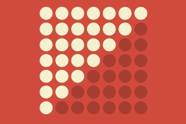

Laws of UX is a collection of best practices that designers can consider when building user interfaces.
The updated Laws of UX large format index poster is now available! Additions include Paradox of the Active User, Selection Attention, Cognitive Bias, and more. Check it out →
Aesthetic-Usability Effect
Users often perceive aesthetically pleasing design as design that’s more usable
Choice Overload
The tendency for people to get overwhelmed when they are presented with a large number of options, often used interchangeably with the term paradox of choice.

Chunking
A process by which individual pieces of an information set are broken down and then grouped together in a meaningful whole.